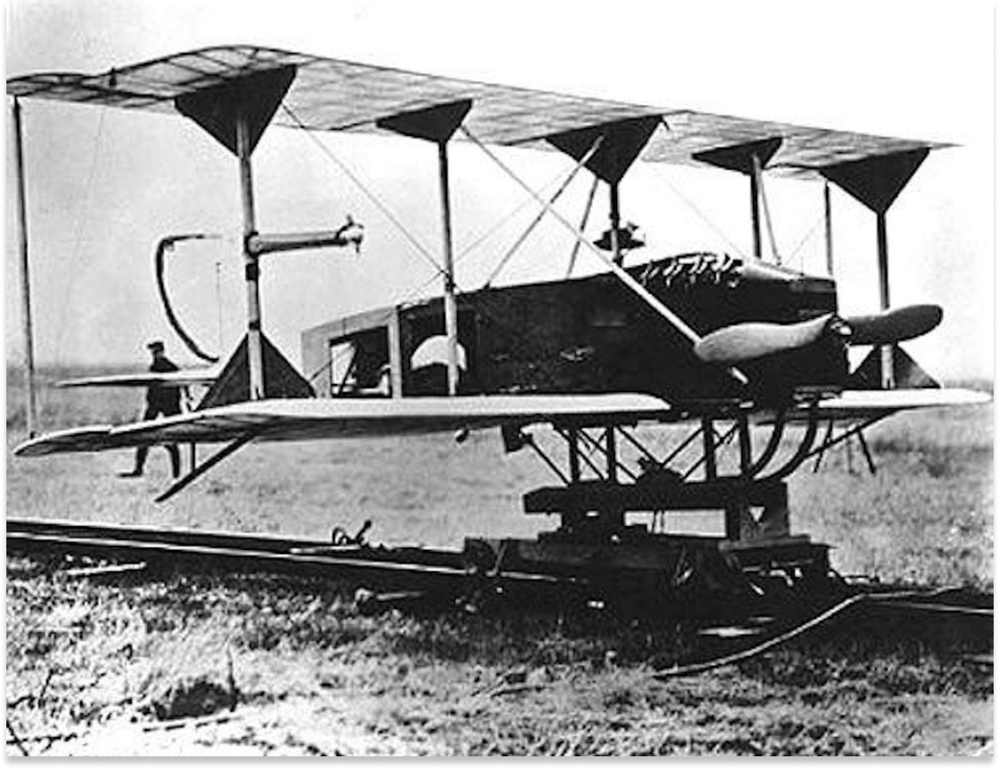

Première guerre mondiale en 1916, commandée à distance par des ondes, un projet d’avion-cible sans pilote. Un concours d’avions sans pilotes en 1918 est organisé par l’armé, Max Boucher fait voler son avion Voisin BN3 pendant 51 minutes sur un parcours de 100km.
Le 17 avril 1923, accompagné de l’ingénieur Maurice Percheron, il réussit à faire voler un véritable drone piloté via la TSF. L’avion radio-commandé est né ! Mais la guerre est finie, et l’armée s’est désintéressée du projet.

Le nom drone est démocratisé en 1941 par la Navy avec son avion cible Target Drone Denny 1, fabriqué à plusieurs milliers d’exemplaires.

Il faudra cependant attendre la Guerre Froide pour voir l’essor du drone. Il est développé secrètement par l’armée américaine comme un moyen de supériorité atégique d’observation, de surveillance et d’intervention militaire dans les lignes ennemies sans encourir les risques humains, qui étaient devenus insupportables pour l’opinion publique.

Une nouvelle étape est en cours avec le développement des drones de combat. Pour des raisons de sécurité évidentes, les constructeurs et les Etats-Majors restent très secrets à ce sujet. D’autant plus que l’emploi des armes totalement automatiques, sans prise de décision humaine, va à l’encontre des lois de la Guerre énoncée par la Convention de Genève.

Historiquement, le secteur de la défense représente un vivier dans le développement de technologies novatrices, qui sont ensuite réutilisées dans le domaine civil. Le drone n’y fait pas exception. Depuis les années 2000, les drones sont utilisés dans des applications civiles de surveillance d’infrastructures et agricoles, audiovisuelles et cinématographiques.